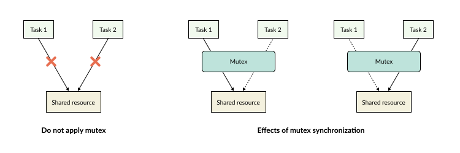
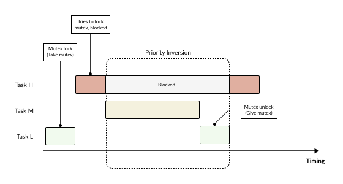
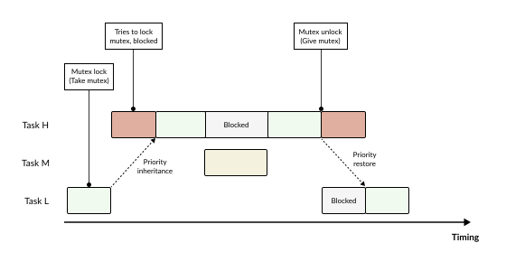

Mutex
A Mutex (Mutual Exclusion) is a mechanism that guarantees only one single task is allowed to access a shared resource at any given time. Common shared resources include:
Hardware resources: UART, SPI, GPIO, etc.
Software resources: Files, shared variables, etc.
{kind=link}

If multiple tasks access a resource simultaneously without a protective mechanism, data can be overwritten or become inconsistent. A Mutex is utilized to resolve this issue.
Normal Mutex
Each mutex has two states:
Unlocked: Not owned by any Task.
Locked: Already owned by a Task.
When a task wants to utilize a shared resource, it must perform a mutex lock operation first. After completing its work, the task must release the mutex. Thanks to this mechanism, tasks cannot access the same resource concurrently, thereby preventing data corruption or race conditions.
Priority Inversion
Although a mutex solves the concurrent access problem, it can introduce another issue known as Priority Inversion.
{kind=link}

For example, consider a system with the following 3 tasks:
Task H: Priority 5 (High)
Task M: Priority 3 (Medium)
Task L: Priority 1 (Low)
The scenario unfolds through the following steps:
Step 1: Initially, Task L is holding the mutex.
Step 2: Later, Task H is activated and wants to use that same resource. However, since the mutex is owned by Task L, Task H must wait.
Step 3: Task M becomes ready, and the problem begins: the scheduler selects Task M to run because Task M has a higher priority than Task L.
Result: Task H cannot run (blocked by the mutex), while Task L cannot release the mutex because its execution has just been preempted by Task M. A high-priority task is thus indirectly blocked by a medium-priority task. This phenomenon is called Priority Inversion.
Priority Inheritance
To resolve priority inversion, an RTOS implements a mechanism called Priority Inheritance. When a high-priority task is blocked by a mutex currently owned by a low-priority task, the RTOS temporarily elevates the priority of that low-priority task to match the priority of the high-priority task.
{kind=link}

Thanks to priority inheritance:
The waiting time of the high-priority task is minimized.
Prolonged priority inversion is prevented.
The real-time responsiveness of the system is enhanced.
This is one of the most critical features of a mutex in modern RTOS frameworks.